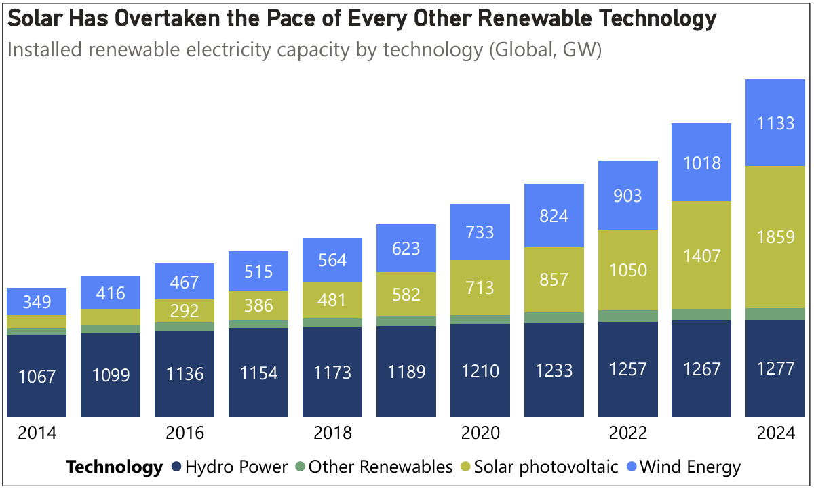
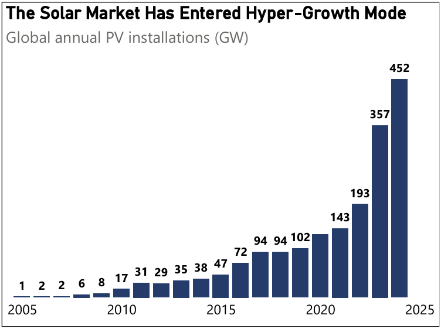
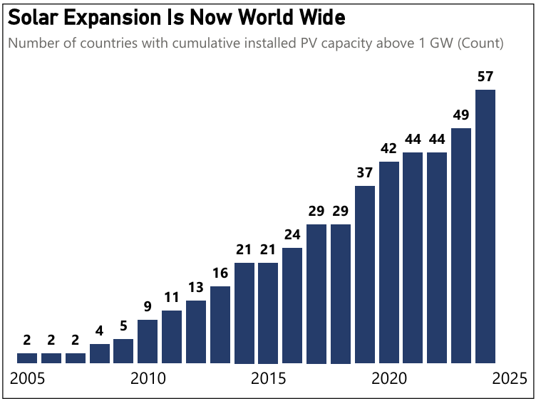
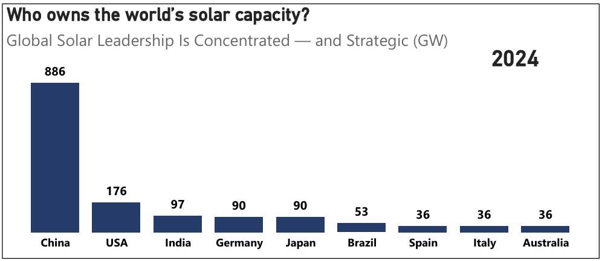
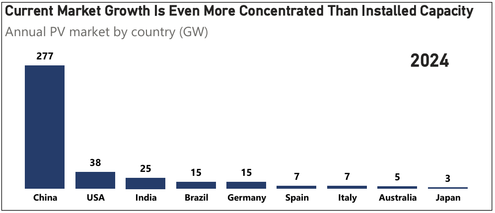

Dashboards and insights on solar photovoltaic market developments across Europe.
As global power systems integrate increasing volumes of renewable generation, the question is no longer whether clean capacity is growing. The decisive issue is which technologies — and which countries — are structurally shaping the system. When cumulative capacity, annual deployment, geographic diffusion, and country concentration are analysed together, a consistent pattern emerges: solar photovoltaic (PV) has become the central driver of renewable system expansion. The transition is no longer technology-diversified. It is increasingly solar-led — and strategically asymmetric.

Data source: IRENAHydropower remains the structural anchor of renewable electricity. Its scale reflects decades of infrastructure investment and long asset lifetimes. However, its expansion trajectory is inherently constrained.
Wind energy has scaled consistently and remains system-critical. Its growth profile reflects industrial maturity and established supply chains.
Solar, however, exhibits a different dynamic. Its capacity growth has moved beyond steady scaling into structural acceleration. The pace of expansion is not only higher — it is redefining the composition of total renewable capacity additions.
The implication is systemic: incremental technologies influence the mix; accelerating technologies reshape it. Solar now belongs to the second category.


Data source: IRENA
Annual installation volumes explain the speed of solar expansion. The increase in countries surpassing 1 GW explains its depth. Two decades ago, solar deployment was limited to a small group of early adopters. Today, dozens of national systems have integrated PV at utility scale.
Crossing the 1 GW threshold signals more than capacity accumulation. It indicates grid integration capability, market design adaptation, capital mobilisation at scale, and institutional maturity. Acceleration without diffusion suggests concentration risk. Acceleration with diffusion signals structural transformation. Solar now exhibits both characteristics.


Data source: IRENA
Cumulative installed capacity reflects long-term strategic positioning. It shows which countries have built structural scale over time. Annual market volumes, by contrast, reveal current momentum.
When comparing the two, an important pattern emerges: leadership in cumulative capacity does not automatically imply balanced global growth. Recent annual additions are even more concentrated than historical stock.
Stock represents past investment and long-term infrastructure build-out. Flow represents present industrial capability and policy acceleration. When both concentrate in the same geography, structural dominance deepens.
Across all five graphs, a consistent structural logic appears:
Hydropower anchors stability. Wind reinforces diversification. Solar drives marginal system expansion and increasingly defines system design constraints.
The global solar transition has moved from experimentation to industrialisation. The defining challenge ahead is integration.
As solar penetration rises, system stability will depend increasingly on storage deployment, grid reinforcement, flexibility markets, and cross-border interconnection. Solar defines the pace. System integration will define resilience.
Let's discuss how data-driven analysis can support your strategy